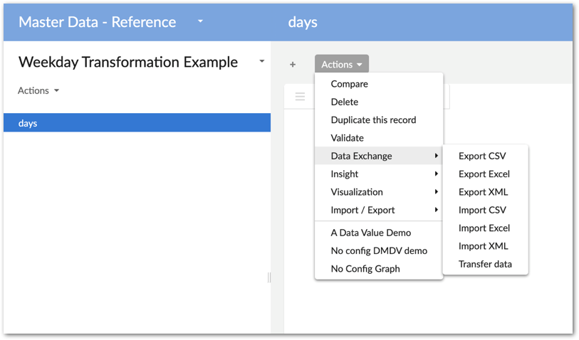
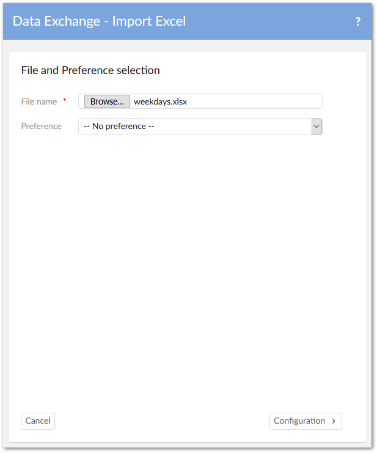
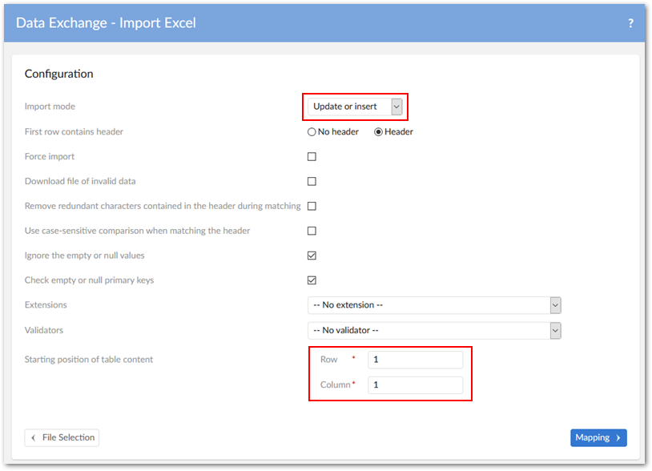
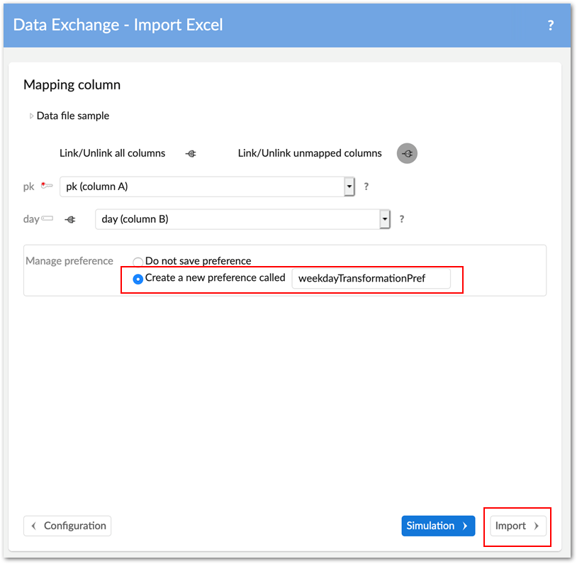
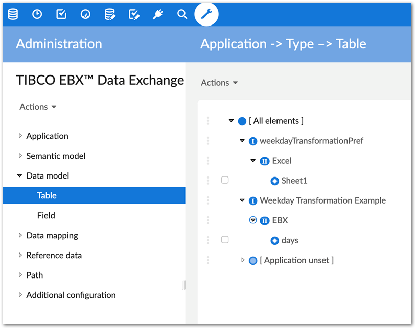
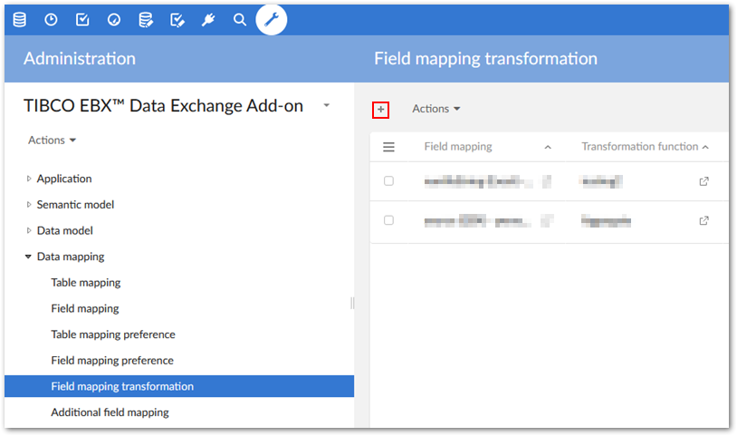
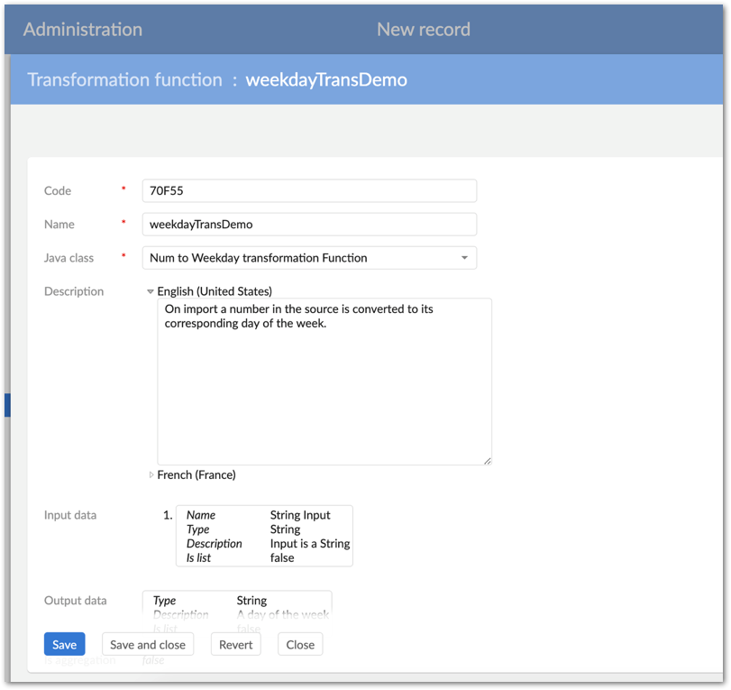
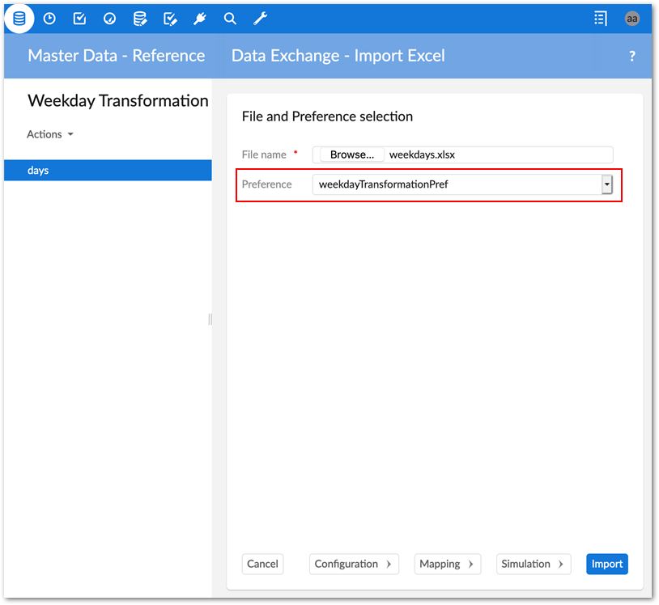
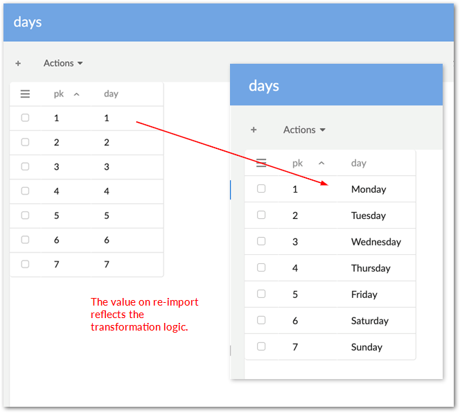

This section gives administrators an example of how to configure the add-on to import and transform data from a spreadsheet. In this example, we also demonstrate the add-on's ability to automatically generate the components required for configuration by creating and saving an import preference. In the final step we add a the transformation to the auto-generated mapping configuration. Once these steps are complete we can re-import the file to apply the transformation.
The process demonstrated in this section might not be the best solution depending on your data structure. For example, if your target table uses an auto-generated primary key and the source has no primary key or it is not mapped, re-importing might result in duplicate records. To avoid this you can follow the general step by step instructions to configure manually. See Generating constant values for more information.
When you import data from a spreadsheet, the add-on automatically creates required applications, interfaces, models, and mappings behind the scene. If you create a preference when importing, the add-on saves all of these settings. You can access the settings and add a transformation to a saved field mapping to alter how data is processed.
To create an import preference and add a transformation:
Open the table in EBX® where you want to import data.
From the Actions menu, select Data Exchange and the import option. In this example we are importing from a spreadsheet so we use Import Excel.

Select Browse to choose the file to import and select Configuration at the bottom of the screen.

Double-check the default options here to ensure the mode and starting position of table data is set correctly and select Mapping at the bottom of the screen.

In the Manage preference box, select Create a new preference called and provide a name. After selecting Import at the bottom of the page you can close the result page and open the Administration area from the main menu.

In the Administration area, browse the contents of the configuration area to see how configuration settings were generated.

We can now add our custom transformation built using the add-on's API by navigating to Data mapping > Field mapping transformation and creating a new record.

In the Field mapping drop-down menu, choose the mapping for the data to transform and use the Transformation function drop-down menu to select the custom transformation. After saving the record populates with the settings specified in the Java class.

After saving and closing the record, navigate to the import target table from step 1 and re-import, making sure to select the preference you just created on the import's file selection page.
Note that depending on your data structure, you might need to update the import mode, or other options. After making changes, the Mapping screen allows you to update the preference, create a new one, or ignore changes.

Notice that upon re-import the add-on applied the transformation function to the data. Anytime this preference is used the function will apply.
